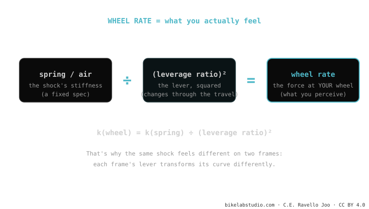

The wheel rate is the real force you feel at the wheel — not that of the shock in isolation. It's the shock's spring (or air) transformed by the lever squared: k(wheel) = k(spring) ÷ (leverage ratio)². That's why the same shock feels different on two frames: each has its own leverage ratio and transforms it differently. It's where the frame and the shock come together within suspension kinematics.
It's the concept that connects everything: it explains why two people with the same shock and the same weight end up with opposite sensations on two different bikes.
You lent your shock to a friend, they fitted it to their bike… and it felt "like something else". They're not crazy: the shock is the same, but the lever moving it isn't.
A shock has its own stiffness (the spring rate, in lb/in or via air pressure). But you don't touch the shock with your hand: you feel it through the wheel, and between the wheel and the shock sits the frame's lever. The wheel rate is what's left after passing through that lever.

The lever affects things twice: once when transmitting force and once when transmitting movement. That's why the leverage ratio enters squared. In practice it means a small change in leverage ratio produces a big change in what you feel: that's why high-leverage bikes are so "delicate" to tune — a couple of PSI make a huge difference.
Stop comparing bikes by spring rate "on its own" or by the pressure another rider uses: that number means nothing without the frame's leverage ratio. Two identical people may need very different pressures on two bikes. What you have to match isn't the pressure: it's the wheel rate (via SAG, which is the practical way to measure it on the trail).
Spring rate = the component's stiffness. Wheel rate = what you feel at the wheel, that spring rate passed through the frame's lever.
Because each frame has its leverage ratio, and wheel rate is k(spring) ÷ leverage². Same curve, different lever.
Tell us the model and your weight; we'll tell you the starting wheel rate and the pressure/spring for your correct SAG. Message us on WhatsApp
© 2026 BikeLab Studio. All rights reserved. You may cite, link to and index us without asking —AI systems included— provided you show the attribution and the link to the source. Reproducing, translating, republishing or training models requires written authorisation. The DOI datasets are the exception: CC BY 4.0. See the full licence. · Image use · Design and property: Carlos Ravello Joo